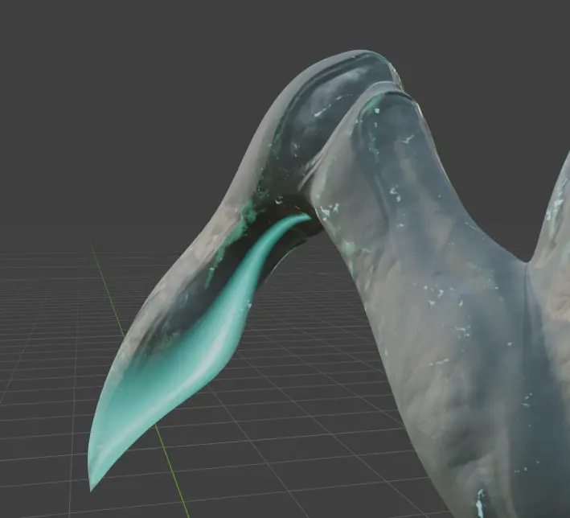
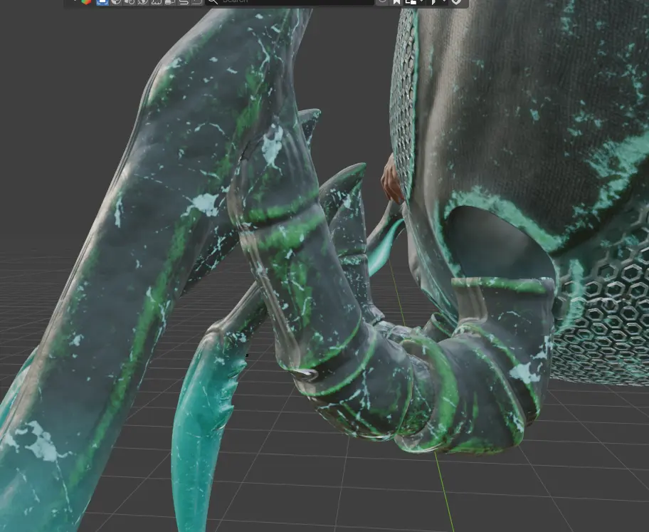

untitled - Paint
Welcome
My Portfolio
Ana V. Rmż

Ana V. Rmż
Durante la carrera desarrollé habilidades de gestión creativa para proyectos de diseño, ejemplos: pósters publicitarios, motion graphics, desarrollo de marcas y logotipos, ilustración editorial, modelado y texturizado en 3D.
Mi nombre es Ana Victoria Ramírez Gómez, tengo 20 años. Me gradué del TSU en Diseño Digital.
Me he especializado en Adobe Photoshop, Illustrator, InDesign, After Effects, Autodesk Sketchbook, Affinity y Blender.

✉ anavramirez1002@gmail.com
✉ atoledechokolate512@gmail.com
📞 +52 449 152 5083



